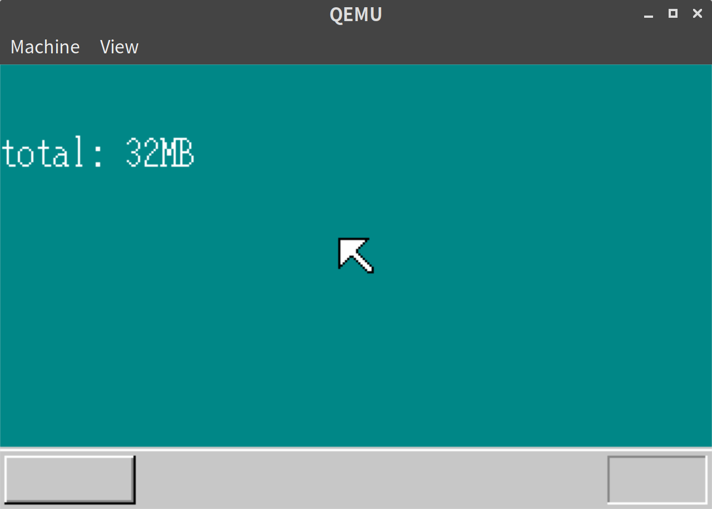
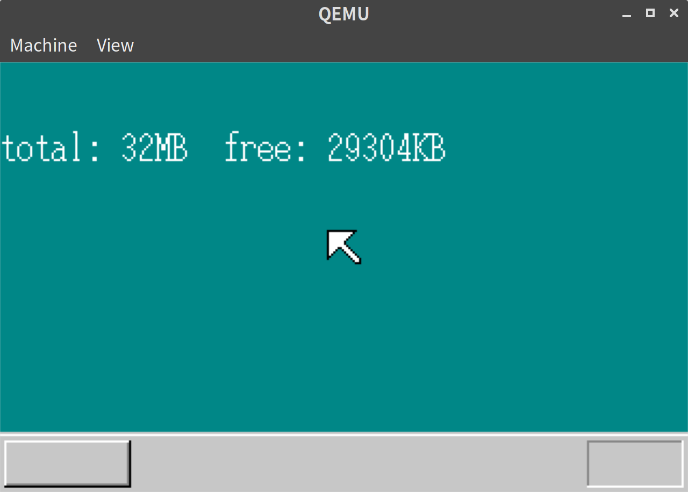

「30日でできる！OS自作入門」をRustで。9日目
Posted on 2019-06-20
「30日でできる！OS自作入門 」のC言語の部分をできるだけRustですすめてみる。今回は9日目の内容。
メモリサイズの測定
今回の目標はメモリ管理となる。
まずはメモリサイズの測定をする。
C言語の実装を参考に、memory.rsという新しいファイルを作成し、以下のように実装した。
// memory.rs
use crate::asm;
const EFLAGS_AC_BIT: u32 = 0x00040000;
const CR0_CACHE_DISABLE: u32 = 0x60000000;
pub fn memtest(start: u32, end: u32) -> u32 {
let mut flg486 = false;
asm::store_eflags((asm::load_eflags() as u32 | EFLAGS_AC_BIT) as i32);
let mut eflags = asm::load_eflags() as u32;
// 386ではAC=1にしても自動で0に戻ってしまう
if eflags & EFLAGS_AC_BIT != 0 {
flg486 = true;
}
eflags &= !EFLAGS_AC_BIT;
asm::store_eflags(eflags as i32);
if flg486 {
// キャッシュ禁止
let cr0 = asm::load_cr0() | CR0_CACHE_DISABLE;
asm::store_cr0(cr0);
}
let memory = memtest_main(start, end);
if flg486 {
// キャッシュ許可
let mut cr0 = asm::load_cr0();
cr0 &= !CR0_CACHE_DISABLE;
asm::store_cr0(cr0);
}
memory
}本体となる測定関数(上の例ではmemtest_main)は、本ではアセンブリ言語で実装されていたが、今回はvolatileクレートを使い、コンパイル時の最適化を抑制した上で、Rustで実装することにした。
// memory.rs
use volatile::Volatile;
fn memtest_main(start: u32, end: u32) -> u32 {
let pat0: u32 = 0xaa55aa55;
let pat1: u32 = 0x55aa55aa;
let mut r = start;
for i in (start..end).step_by(0x1000) {
r = i;
let mp = (i + 0xffc) as *mut u32;
let p = unsafe { &mut *(mp as *mut Volatile<u32>) };
let old = p.read();
p.write(pat0);
p.write(!p.read());
if p.read() != pat1 {
p.write(old);
break;
}
p.write(!p.read());
if p.read() != pat0 {
p.write(old);
break;
}
p.write(old);
}
r
}以下のようにして最大メモリ数を表示してみる。
// lib.rs
#[no_mangle]
#[start]
pub extern "C" fn haribote_os() {
// 省略
enable_mouse();
// ここから追加
let memtotal = memory::memtest(0x00400000, 0xbfffffff);
(Screen::new()).boxfill8(Color::DarkCyan, 0, 32, 100, 48);
let mut writer = ScreenWriter::new(Screen::new(), vga::Color::White, 0, 32);
write!(writer, "total: {}MB", memtotal / (1024 * 1024)).unwrap();
// ここまで追加
loop {
cli();
// 省略
}メモリサイズを表示
本と同様に32MBになるように qemu-system-i386 -m 32 -fda haribote.img でQEMUを起動するようにした。

上図の通り、32MBがちゃんと測定できた。
メモリ管理をする
次に、メモリ管理を実装していく。本の通り、freeされているメモリを保持するデータ構造をつくる。
実装が長くなってしまったものの、一応全て載せておく。
// memory.rs
const MEMMAN_FREES: u32 = 4090; // 約32KB
pub const MEMMAN_ADDR: u32 = 0x003c0000;
#[derive(Debug, Clone, Copy, PartialEq)]
struct FreeInfo {
addr: u32,
size: u32,
}
#[derive(Clone, Copy)]
pub struct MemMan {
frees: u32,
maxfrees: u32,
lostsize: u32,
losts: u32,
free: [FreeInfo; MEMMAN_FREES as usize],
}
impl MemMan {
pub fn new() -> MemMan {
MemMan {
frees: 0,
maxfrees: 0,
lostsize: 0,
losts: 0,
free: [FreeInfo { addr: 0, size: 0 }; MEMMAN_FREES as usize],
}
}
pub fn total(&self) -> u32 {
let mut t = 0;
for i in 0..self.frees {
t += self.free[i as usize].size;
}
t
}
pub fn alloc(&mut self, size: u32) -> Result<u32, &'static str> {
for i in 0..self.frees {
let i = i as usize;
if self.free[i].size >= size {
let a = self.free[i].addr;
self.free[i].addr += size;
self.free[i].size -= size;
if self.free[i].size == 0 {
self.frees -= 1;
self.free[i] = self.free[i + 1]
}
return Ok(a);
}
}
Err("CANNOT ALLOCATE MEMORY")
}
pub fn free(&mut self, addr: u32, size: u32) -> Result<(), &'static str> {
let mut idx: usize = 0;
// addrの順に並ぶように、insertすべきindexを決める
for i in 0..self.frees {
let i = i as usize;
if self.free[i].addr > addr {
idx = i;
break;
}
}
if idx > 0 {
if self.free[idx - 1].addr + self.free[idx - 1].size == addr {
self.free[idx - 1].size += size;
if idx < self.frees as usize {
if addr + size == self.free[idx].addr {
self.free[idx - 1].size += self.free[idx].size;
}
self.frees -= 1;
for i in idx..(self.frees as usize) {
self.free[i] = self.free[i + 1];
}
}
return Ok(());
}
}
if idx < self.frees as usize {
if addr + size == self.free[idx].addr {
self.free[idx].addr = addr;
self.free[idx].size += size;
return Ok(());
}
}
if self.frees < MEMMAN_FREES {
let mut j = self.frees as usize;
while j > idx {
self.free[j] = self.free[j - 1];
j -= 1;
}
self.frees += 1;
if self.maxfrees < self.frees {
self.maxfrees = self.frees;
}
self.free[idx].addr = addr;
self.free[idx].size = size;
return Ok(());
}
self.losts += 1;
self.lostsize += size;
Err("CANNOT FREE MEMORY")
}
}以下のように、freeした結果を表示する。
// lib.rs
#[no_mangle]
#[start]
pub extern "C" fn haribote_os() {
// 省略
enable_mouse();
// 追加ここから
let memtotal = memory::memtest(0x00400000, 0xbfffffff);
let memman = unsafe { &mut *(MEMMAN_ADDR as *mut MemMan) };
*memman = MemMan::new();
memman.free(0x00001000, 0x0009e000).unwrap();
memman.free(0x00400000, 2).unwrap();
memman.free(0x00400000, memtotal - 0x00400000).unwrap();
(Screen::new()).boxfill8(Color::DarkCyan, 0, 32, 100, 48);
let mut writer = ScreenWriter::new(Screen::new(), vga::Color::White, 0, 32);
write!(
writer,
"total: {}MB free: {}KB",
memtotal / (1024 * 1024),
memman.total() / 1024
)
.unwrap();
// 追加ここまで
loop {
// 省略
}free結果
実行してみると以下の通り、正しく29304KBが表示される。

9日目は以上となる。ここまでの内容のコードはyoshitsugu/hariboteos_in_rustのday9としてタグを打ってある。